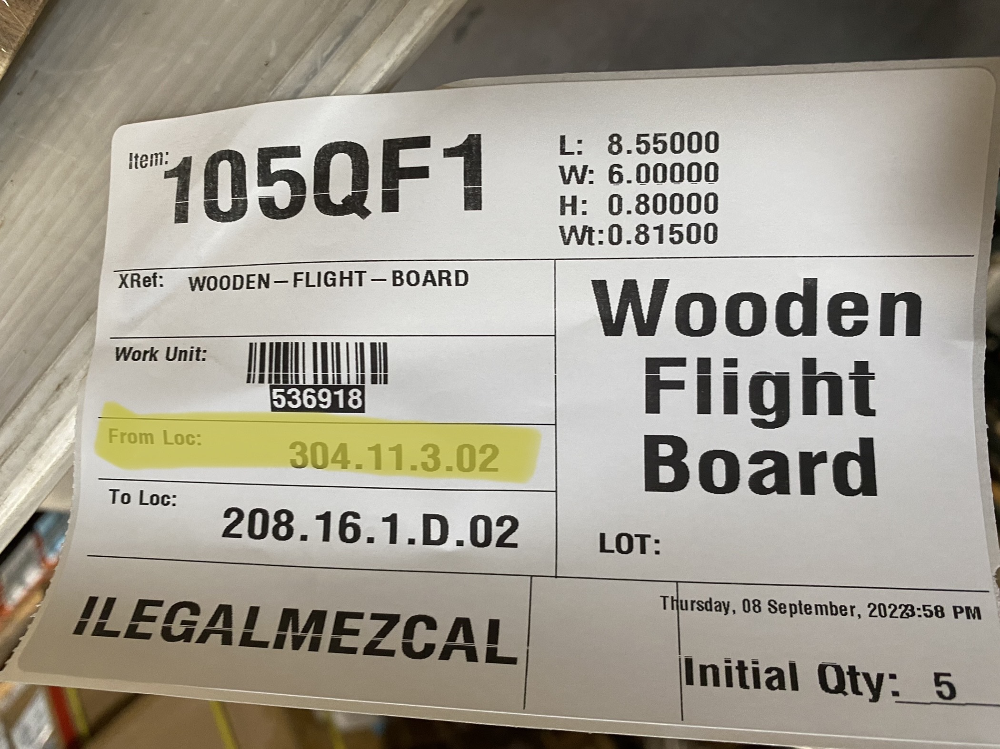
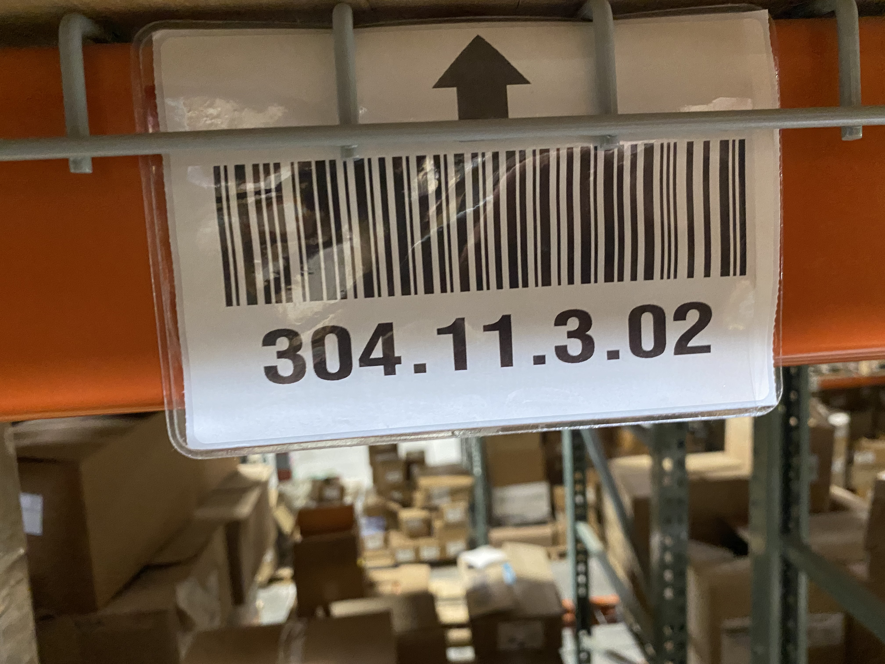
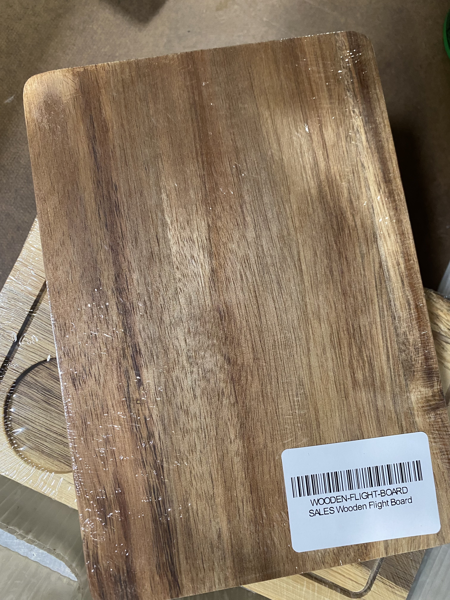
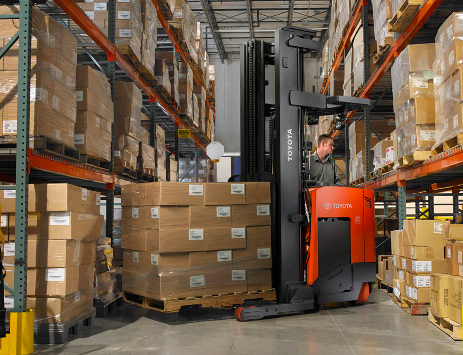
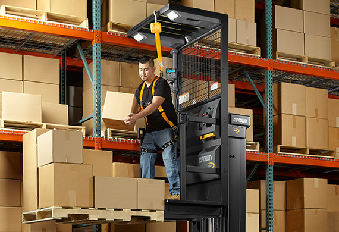
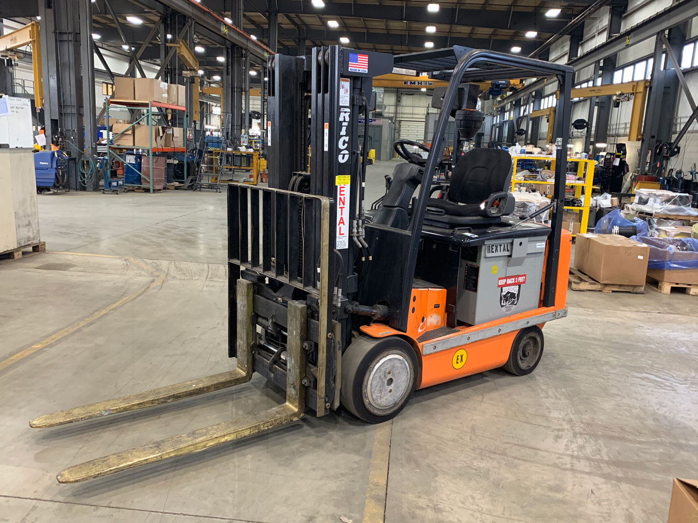

Inventory Movement
What we do
The Inventory Movement team has many tasks to perform thoughout the day.
Below listed are the tasks:
- Clear VASP%
- Clear PTWY%
- Replenishment
- Transfer list
- Deplenishment
Tasks Explanation
Clearing VASP% and PTWY% locations are our way of putting certain pallets of merchandise directly received by our Receving team either into storage or sending those pallets to our Asseembly team to be made ready, and then moved into storage.
Replenishment work is made by our computer system and is made based off what customers are ordering in bulk and will need to be shipped out for the day or for the near future.
Transfer work is created by the Team Lead or by the Team Line Lead. Both will require you to go to certain storage locations in the warehouse get a number of specific items from that location and then move them into a forward pick location. These forward pick locations will allow the "cart pickers" from our Fulfilment team to pick those items, pack then and ship them to the customers.
Deplenishment is when we move items that were in forward pick locations back into warehouse storage locations. We do this to free up forward pick spots for other inventory.
Team Lead
Your Team Lead for Inventory Movement is Marco. Look for him if you have any questions or concerns. If Marco is not around the next best person to reach out to would be John Ramsey.
The role of the team lead is to support you in anyway you need to have a successful shift.
Replenishment & Transfers
When doing replen and transfers you'll first start off with a single work order. From there you'll scan the work order with your RF Scanner



When working on the team you will become familiar with driving and operating machinery in the warehouse. Below are images of the machinery we use everyday. To be eligiable to become an operatior, you'll have to watch a training video, pass a written test and be trained by our warehouse trainer.


